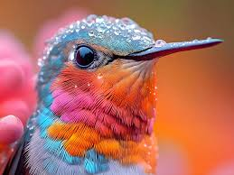

Freepik fue fundado en 2010 por los hermanos Alejandro Sánchez y Pablo Blanes, junto con su amigo Joaquín Cuenca, fundador de Panoramio . Inicialmente, era un motor de búsqueda que indexaba contenido de los 10 mejores sitios web de contenido gratuito para diseñadores. En 2014, Freepik comenzó a producir recursos gráficos. En 2015, se lanzó el modelo de suscripción, donde los usuarios que pagan por una cuenta premium tienen acceso a más contenido. El sitio también comenzó a permitir que diseñadores y fotógrafos subieran sus recursos a la plataforma para generar ingresos. En 2018, Freepik cambió su identidad visual e introdujo un nuevo logotipo. En 2020, durante la pandemia de COVID-19 , Freepik ofreció sus recursos de forma gratuita a trabajadores de la salud, educadores, periodistas y trabajadores de instituciones públicas. En 2023, Freepik abrió su oficina en San Francisco y pasó de ser una plataforma puramente de stock a un proveedor de productos y herramientas Gen-AI. En abril de 2025, Freepik se asoció con Fal.ai y lanzó F-Lite , un modelo de texto a imagen de código abierto entrenado exclusivamente con imágenes de alta calidad, legalmente compatibles, seguras con derechos de autor y SFW de la biblioteca de stock de Freepik. En mayo de 2025, la empresa lanzó Freepik Enterprise, un plan de precios diseñado para grandes organizaciones que incluye acceso a herramientas de IA y contenido de stock, uso basado en créditos, gestión de permisos e indemnización legal por contenido generado por IA.
Las principales limitaciones de Freepik son un límite diario de descargas para usuarios no registrados, la necesidad de dar crédito al autor (a menos que se tenga una suscripción Premium) y restricciones en el uso de los contenidos para fines difamatorios, injuriosos o inmorales. Además, el plan gratuito puede tener menos recursos disponibles y la necesidad de publicidad para los creadores.
Las principales limitaciones de Freepik son un límite diario de descargas para usuarios no registrados, la necesidad de dar crédito al autor (a menos que se tenga una suscripción Premium) y restricciones en el uso de los contenidos para fines difamatorios, injuriosos o inmorales. Además, el plan gratuito puede tener menos recursos disponibles y la necesidad de publicidad para los creadores.